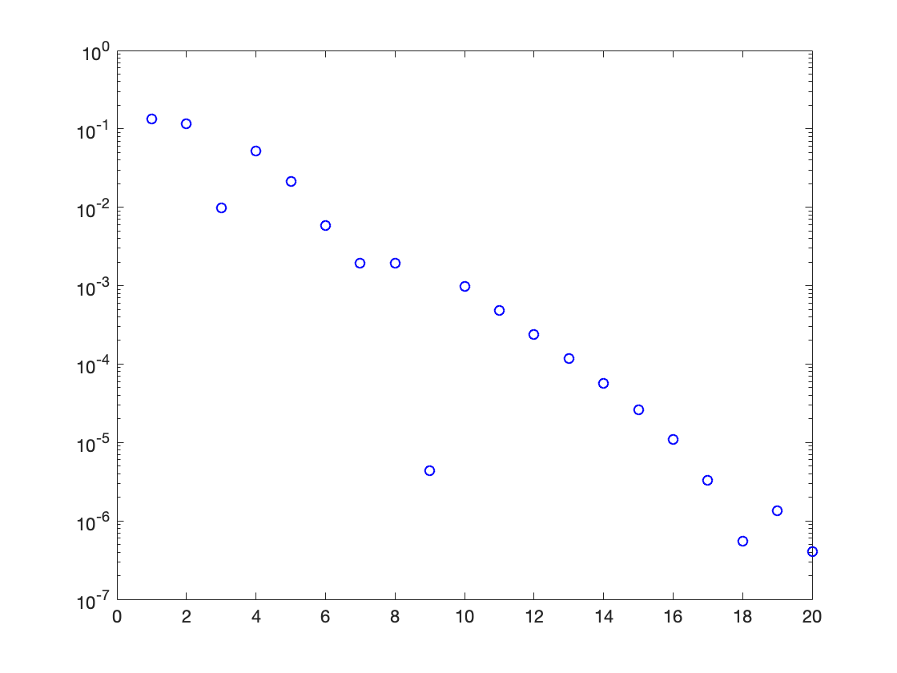
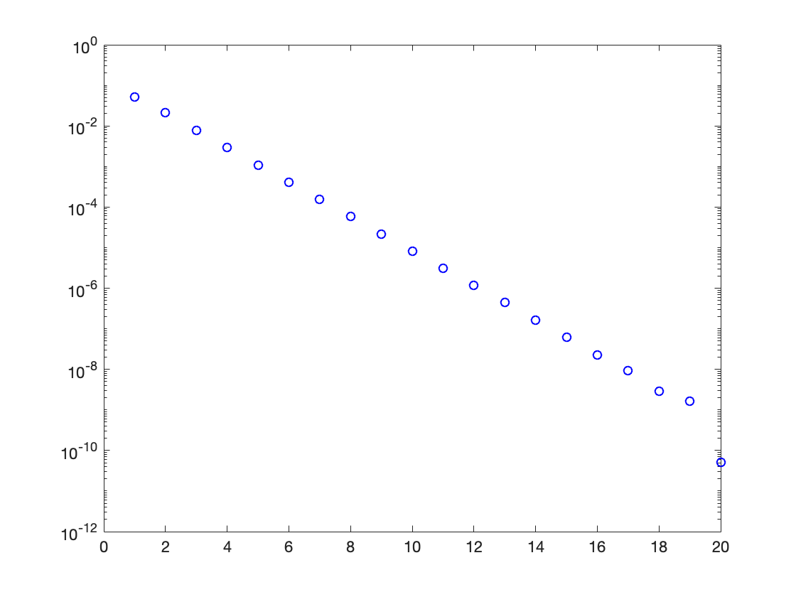
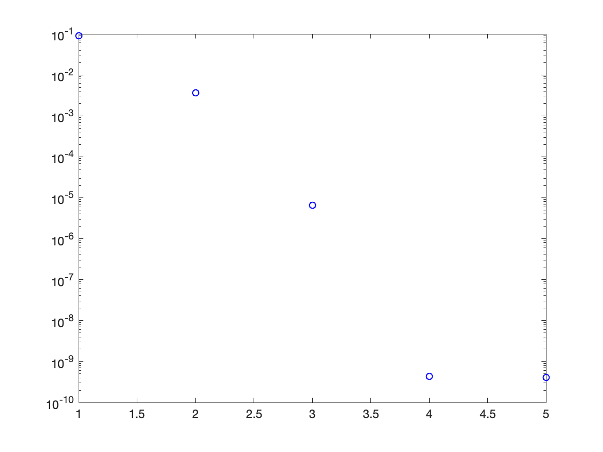
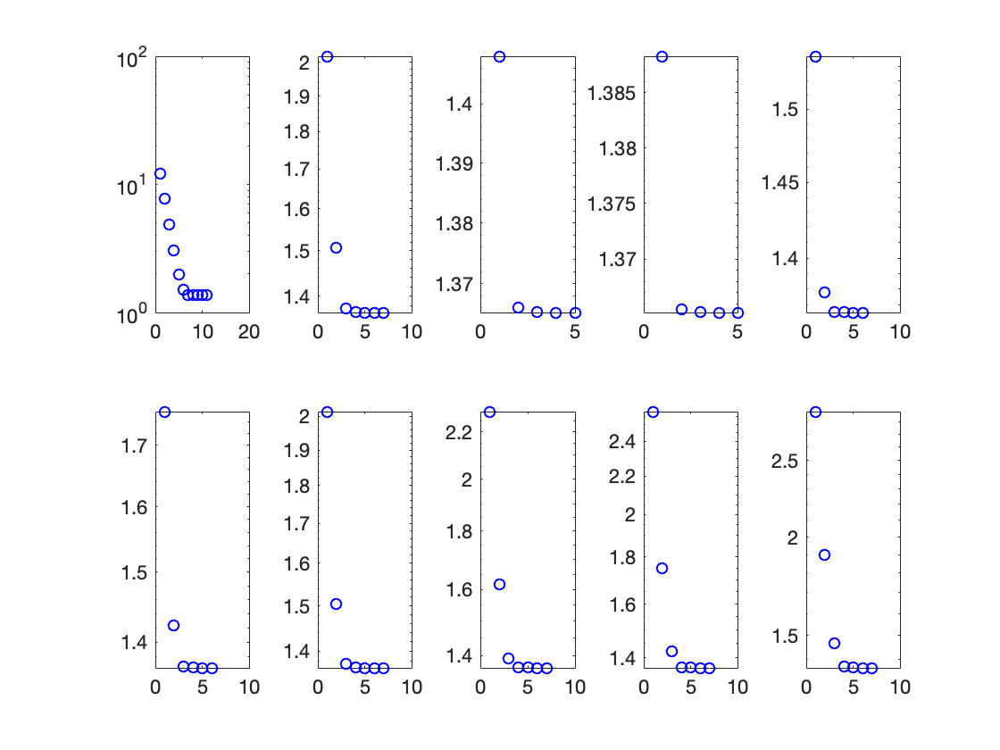

Contents
MATH2019 / G12ISC (2018-2019) Coursework 1
NAME: LAN SHUI STUDENT ID: 4336432
clear all; close all; clc
Question 2
% The code produces a table containing n, pn and f(pn) during the bisection method. format long f=@(x)x.^3+4*x.^2-10; [p_vec,fp_vec]=bisect(f,1,2,20); n=[1:20]'; table(n,p_vec,fp_vec)
ans =
20×3 table
n p_vec fp_vec
__ ________________ _____________________
1 1.5 2.375
2 1.25 -1.796875
3 1.375 0.162109375
4 1.3125 -0.848388671875
5 1.34375 -0.350982666015625
6 1.359375 -0.0964088439941406
7 1.3671875 0.032355785369873
8 1.36328125 -0.0321499705314636
9 1.365234375 7.20247626304626e-05
10 1.3642578125 -0.0160466907545924
11 1.36474609375 -0.0079892628127709
12 1.364990234375 -0.00395910152292345
13 1.3651123046875 -0.00194365901006677
14 1.36517333984375 -0.000935847281880342
15 1.36520385742188 -0.000431918799250752
16 1.36521911621094 -0.000179948903227256
17 1.36522674560547 -5.39625415285627e-05
18 1.36523056030273 9.03099274296437e-06
19 1.3652286529541 -2.24658038447956e-05
20 1.36522960662842 -6.7174129139147e-06
Question 3
% The code creates a figure ploting the error versus n during the bisection method. p=1.365230013; for i=1:20 e=abs(p-p_vec(i)); semilogy(i,e,'bo') hold on end
Question 5
% The code produces a table containing n and pn during the fixed- point iteration. clear all; close all; clc format long f=@(x)x.^3+4*x.^2-10; g=@(x)x-1/12*f(x); p_vec=fpiter(g,1,20); n=[1:20]'; table(n,p_vec)
ans =
20×2 table
n p_vec
__ ________________
1 1.41666666666667
2 1.34408757716049
3 1.3728812557799
4 1.36231272240944
5 1.36632151543739
6 1.36481867753577
7 1.36538460952031
8 1.36517185112966
9 1.36525188693197
10 1.36522178609837
11 1.36523310779837
12 1.36522884955838
13 1.36523045115863
14 1.36522984877099
15 1.36523007533908
16 1.36522999012308
17 1.36523002217423
18 1.36523001011926
19 1.36523001465334
20 1.365230012948
Question 6
% The code creates a figure ploting the error versus n during the fixed- point iteration. p=1.365230013; for i=1:20 e=abs(p-p_vec(i)); semilogy(i,e,'bo') hold on end
Question 7
% This code produces the pmax that for any p0 >= pmax, the fixed-point iteration won't converge. % A general fixed-point method converges linearly if it converges. So a % criterion that can be taken to judge if the iteration converges is the % difference between p and p20 after 20 iterations. If it's large, say large % than 0.001, the iteration doesn't converge. % This experimental method isn't accurate enough as 0.001 and 20 don't % have a very strong theoretical basis. The accuracy is also influenced by % the amount of data being chosen. a=1.37; % The experimental data {an} being chosen is an arithmetic progression with % a0=1.37, d=0.5 and n=10. for i=1:10 p_vec=fpiter(g,a,20); if abs(p-p_vec(20,1))>0.001 pmax=a break; else a=a+0.5; end end
pmax = 3.370000000000000
Question 9
% This code produces a table containing n and pn during Newton's method. clear all; close all; clc format long f=@(x)x.^3+4*x.^2-10; df=@(x)3*x.^2+8*x; p_vec=newton(f,df,1,40,1e-10); n=[1:size(p_vec,1)]'; table(n,p_vec) % The code creates a figure ploting the error versus n during Newton's method. p=1.365230013; for i=1:size(p_vec,1) e=abs(p-p_vec(i)); semilogy(i,e,'bo') hold on end
ans =
5×2 table
n p_vec
_ ________________
1 1.45454545454545
2 1.36890040106952
3 1.36523660020212
4 1.36523001343537
5 1.3652300134141
 Question 10
% This part invesgates the convergence behaviour of Newton's method for values % of p0 that approach 0 from above. a=0.1; % The experimental data {an} being chosen is an arithmetic progression with % a0=0.1, d=0.5 and n=10. % The code produces figures ploting pn versus n during the iteration for each p0. for i=1:10 p_vec=newton(f,df,a,40,1e-10); n=size(p_vec,1); subplot(2,5,i); for j=1:n semilogy(j,p_vec(j),'bo') hold on end a=a+0.5; end % From the gragh, it can be figured out that the Newton's method converges % quite quickly for p0 near 0 from above.